Ханты-Мансийская городская организация
Общероссийской общественной организации
«Всероссийское общество инвалидов»
ул. Чехова, 67
Ансамбль «Матрёшка»
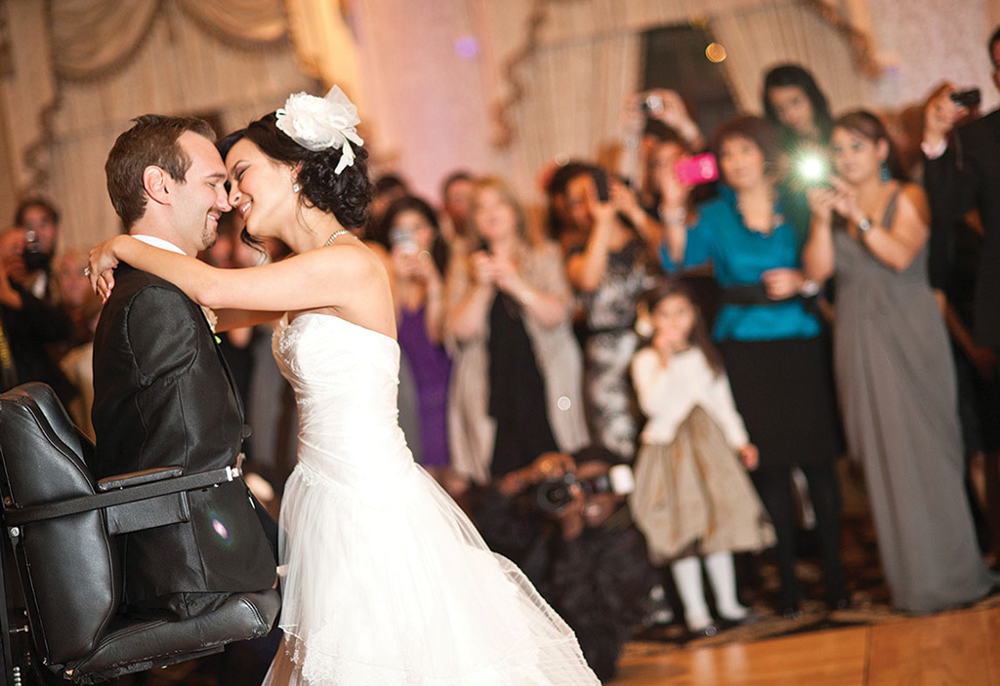
The all-new BMW i8. Official Launch Video.
BMW i8 – репортаж Михаила Петровского
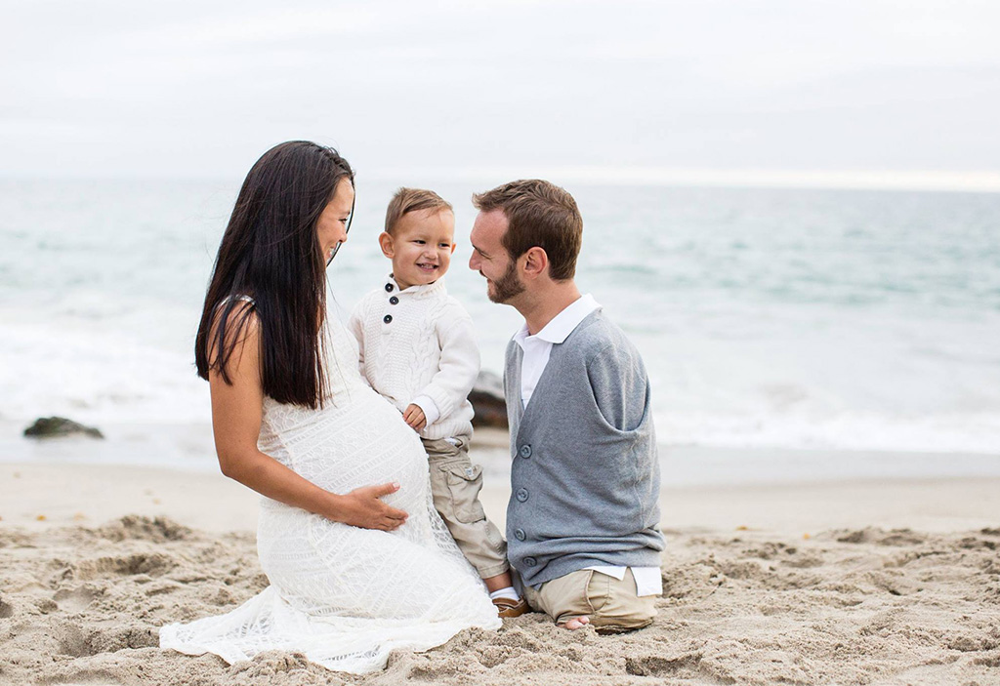
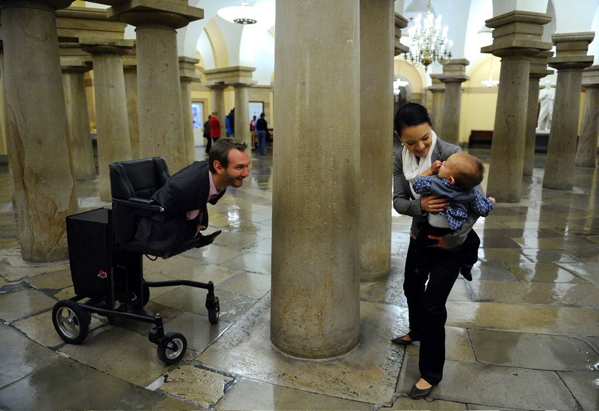
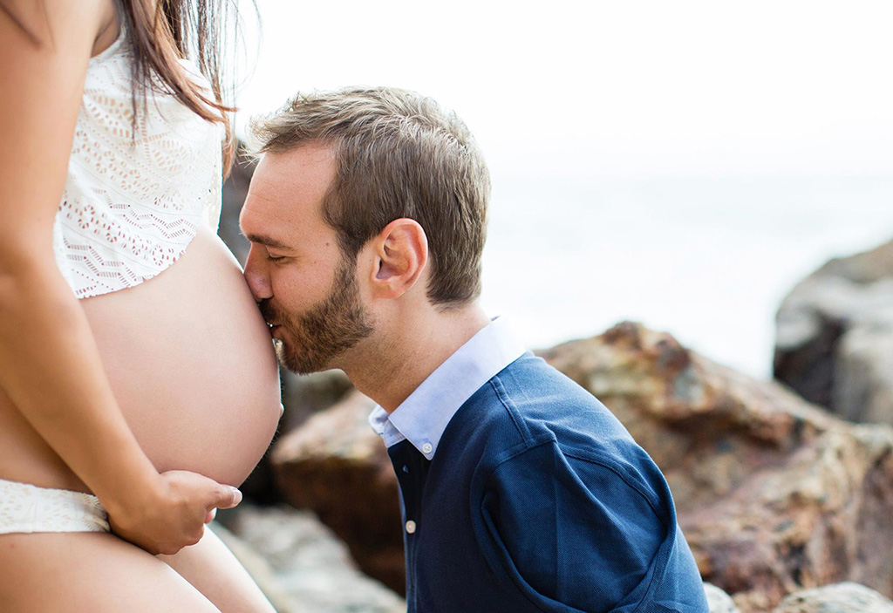
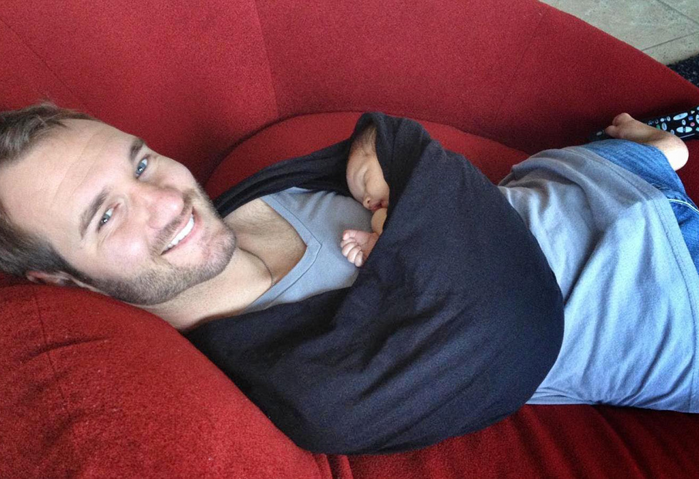
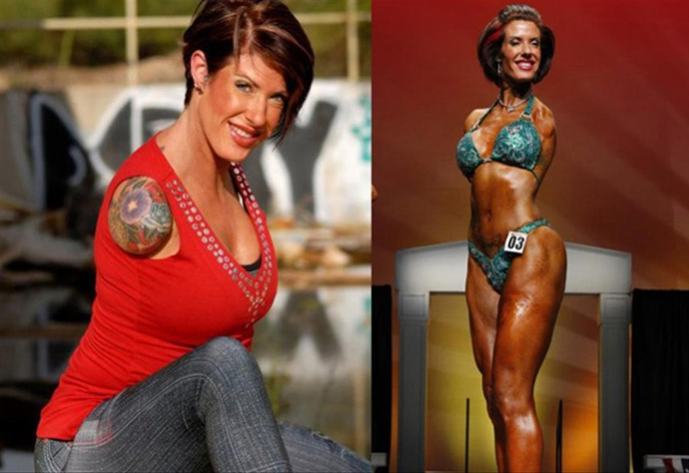
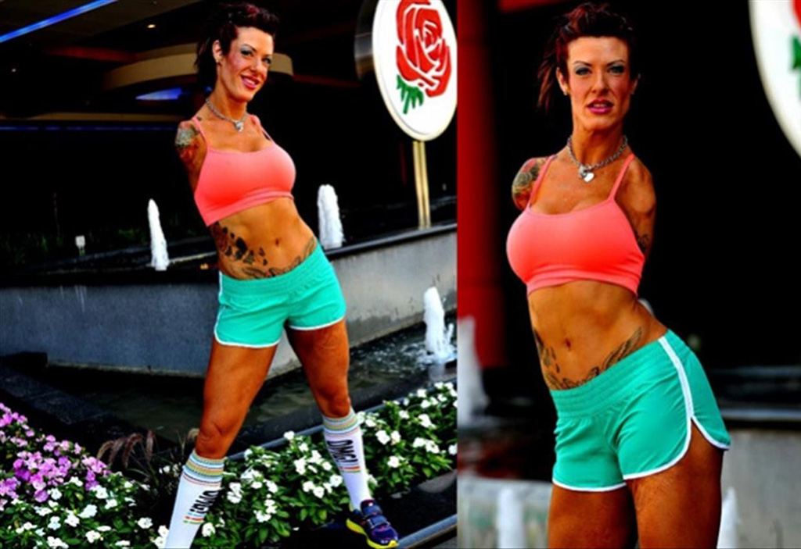
Описание
Музыка, которую мы исполняем, говорит о вечном. Послушайте, о чем все эти песни! В них – размышления о рождении, смерти, существовании Бога и первопричине мироздания. Одним словом, вопросы, которые, так или иначе, ставит перед собой любой, даже самый увязший в рутине человек. И ставил всегда, как сегодня, так и десять веков назад. Менялись формы, способы, с помощью которых люди пытались выразить свои переживания. А темы – извечные и всем понятные и близкие.
Ансамбль древнерусской духовной музыки «Сирин» был создан в 1989 году Андреем Котовым и группой молодых профессиональных музыкантов с целью возрождения древних православных певческих традиций. Андрей Котов, руководитель ансамбля — фольклорист, исполнитель.
Состав ансамбля
-
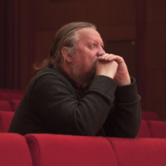
Андрей Котовдирижер
-
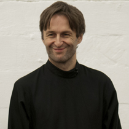
Александр Маноцковгитара
-
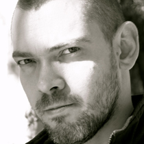
Василий Коростелевбарабаны
-
Василий Коростелевгусли
-
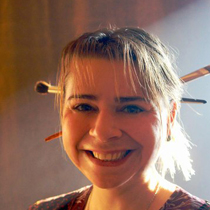
Мария Шенталинскаядирижер
-
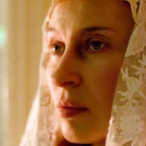
Тина Георгиевскаягитара
-
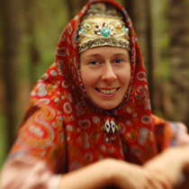
Полина Терентьевабарабаны
-
Варвара Котовагусли